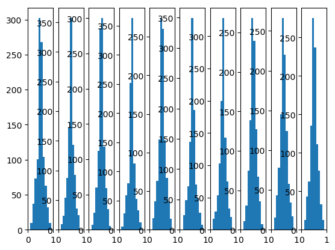
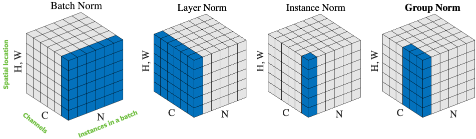

Batch Normalization
Table of Contents
1 Batch Normalization
1.1 Overview
我们调节 \(w\) 的目的是为了保证输出在一定的范围内, 例如符合标准正态分布.
batch normalization 不调整 \(w\): 它对输出作 normalization, 保证输出是标准正态分布, batch normalization 与 feature scaling 时的 normalization 类似, `the mean and standard-deviation are calculated per-dimension over the mini-batches`
batch normalization 的代码基本上为:
mu = np.mean(X, axis=-1, keepdims=True) std = np.std(X, axis=-1, keepdims=True) X_normed = (X - mu) / (std + self.epsilon) out = self.gamma * X_normed + self.beta
其中最后一步称为 scale and shift, self.gamma 和 self.beta 是可学习的参数, 为了调整 normalization 的结果.
以 relu 为例, 若直接使用 X_normed, 会导致有一半的 x 被丢弃 (X_normed 有 50% 的概率 < 0). 如果通过 scale and shift 能把 X_normed 向正方向移动一下, 就没有问题了.
import matplotlib.pyplot as plt import torch N = 100 plt.style.use("default") # plt.ylim(0, 40) def init_weight(in_features, out_features): return torch.nn.Parameter(torch.randn(in_features, out_features)) class Layer(torch.nn.Module): def __init__(self, in_features, out_features, n): super().__init__() self.n = n self.w = init_weight(in_features, out_features) self.bn = torch.nn.BatchNorm1d(in_features) def forward(self, input): ret = torch.matmul(input, self.w) ret = self.bn(ret) ret = torch.nn.functional.sigmoid(ret) plt.subplot(1, 10, self.n) plt.xlim(0,1) plt.hist(ret.detach().numpy().reshape(-1)) return ret def train(): net = torch.nn.Sequential() for i in range(10): net.add_module("linear%d" % (i), Layer(N, N, i + 1)) x = torch.rand(10, N) net(x) plt.show() train()

1.2 DNN 的 batchnorm
DNN 的 batchnorm 是在 batch 的维度上进行平均, 即:
batch1: a b c d e batch2: x y z m n batchnorm 后为: batch1: a-u1, b-u2, c-u3... batch2: x-u1, b-u2, c-u3... u1 是 mean(a,x), u2 是 mean(b-y)...
mean 的个数和 output 的 shape 相等
1.3 CNN 的 batchnorm
把一个 channel 看做整体, CNN 的 batchnorm 与 DNN 类似, 即:
batch1: channel1:a b c channel2: a' b' c'
d e f d' e' f'
batch2: channel1:x y z channel2: x' y' z'
m n p m' n' p'
batchnorm 后为:
batch1: channel1: a-u1 b-u1 c-u1 channel2: a'-u2 b'-u2...
... ....
batch2: channel1: x-u1 y-u1 z-u1 channel2: x'-u2 y'-u2...
... ...
u1 是 mean(a,b,c,d,e,f,x,y,z,m,n,p)
u2 是 mean(a',b',c',d',e',f',x',y',z',m',n',p')
考虑到同一个 channel 的数据都是用同一个 kernel 计算出来的, mean 的个数和 kernel 的个数 (或 output channel 个数) 相同, 即以 channel 为单位计算 mean
tensorflow 的 BatchNormalization 函数接受一个参数 axis, 默认为 -1, 对于 DNN, -1 即 batch 之外那个 axis, 对于 CNN, -1 为 channel.
BatchNormalization(axis=-1) 与 sum(axis=-1) 中 axis 的意义不同: sum 的 axis 指去掉这一维, BatchNormalization 的 axis 指保留这一维
1.5 batchnorm->relu 还是 relu->batchnorm
1.5.1 batchnorm->relu 的优点
tflite 使用 batchnorm->relu 时, 可以把 batchnorm 和 relu 融合 (fuse) 到前面一层 cnn 或 dnn, 但使用 relu->batchnorm 时无法融合, 因为 batchorm 在 inference 时相当于对 input 的线性变换, 如果它的前一层也是一个线性变换, 而两者可以很简单的合并成一个线性变换, 但两者之前加上一个 relu 就没法操作了, 因为 relu 并不是线性的
另一方面, relu 放在 batchnorm 之前可能会出来 BatchNorm 导致很大的量化误差 的问题
1.5.2 relu->batchnorm 优点
从实践上看, relu->batchnorm 训练出来的模型的性能更好一点
1.6 Layer Normalization
- batchnorm 是使用 axis(-1) (即 channel) 做 normalization
- layernorm 使用 axis(0) (即 batch) 做 normalization

使用 layernorm 的原因有两个:
- batchnorm 需要较在的 batch size 才能工作
- rnn 里同一个 batch 里样本的大小可能不同